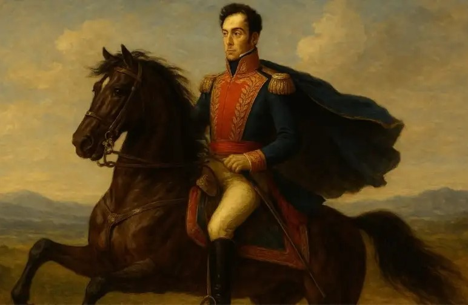
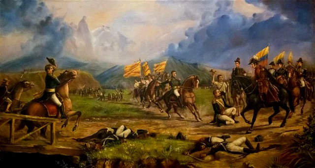

Independencia
de Colombia
Un proceso histórico complejo · Siglos XVIII–XIX
La independencia de Colombia fue un proceso histórico complejo que tuvo lugar a comienzos del siglo XIX, cuando los territorios del Virreinato de la Nueva Granada buscaron liberarse del dominio del Imperio español. Este proceso fue largo y estuvo marcado por conflictos, ideas revolucionarias y la participación de importantes figuras históricas.

Antecedentes
Uno de los antecedentes más importantes fue la influencia de las ideas ilustradas, que promovían la libertad y la igualdad. Además, la invasión de España por parte de Napoleón Bonaparte en 1808 debilitó el control sobre las colonias, creando una oportunidad para los movimientos independentistas.
El Grito de Independencia · 20 de julio de 1810
El proceso inició el 20 de julio de 1810 en Santa Fe de Bogotá, con un levantamiento popular conocido como el "Grito de Independencia". En este hecho tuvo un papel importante José Acevedo y Gómez, quien motivó al pueblo a rebelarse contra las autoridades españolas.
Después de este acontecimiento comenzó el periodo conocido como La Patria Boba (1810–1816), caracterizado por conflictos internos entre los criollos. Durante esta etapa, líderes como Camilo Torres Tenorio defendían ideas de autonomía, mientras que Antonio Nariño impulsaba un gobierno más centralista. Estas divisiones debilitaron el proceso independentista.
El Régimen del Terror · 1816
En 1816, España envió tropas para recuperar el control bajo el mando de Pablo Morillo, dando inicio a un periodo de fuerte represión conocido como el "Régimen del Terror". Durante este tiempo, muchos patriotas fueron perseguidos y ejecutados. Entre las figuras más recordadas está Policarpa Salavarrieta, quien actuó como espía y se convirtió en símbolo de resistencia tras su ejecución.
Los Líderes de la Libertad
A pesar de la represión, la lucha continuó gracias a líderes como Simón Bolívar, conocido como "El Libertador", quien organizó campañas militares para liberar el territorio. Junto a él participaron figuras clave como Francisco de Paula Santander, quien ayudó en la organización política y militar, y Antonio José de Sucre, destacado general en las batallas.
También fue importante la participación de Manuela Sáenz, quien apoyó activamente la causa independentista y colaboró con Bolívar en momentos clave.
Batalla de Boyacá · 7 de agosto de 1819
El momento decisivo ocurrió el 7 de agosto de 1819, con la Batalla de Boyacá, donde el ejército patriota logró derrotar a las fuerzas españolas. Esta victoria aseguró la independencia de la Nueva Granada.
La Gran Colombia
Posteriormente, se creó la Gran Colombia, una nación que unía a varios territorios del norte de Sudamérica. Aunque esta unión no duró mucho tiempo, fue un paso fundamental en la construcción de países independientes.

Conclusión
La independencia de Colombia fue un proceso lleno de dificultades, luchas internas y enfrentamientos contra el dominio español. Gracias al esfuerzo de múltiples líderes y personajes históricos, se logró la libertad y el inicio de Colombia como una nación soberana.